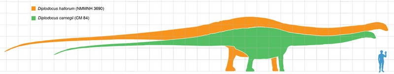

Диплодок — один из самых больших сухопутных травоядных динозавров на нашей планете!
| № п/п | Наименование вида | Ученый, открывший вид | Дата открытия | Вес/Размер |
| Валидные виды | ||||
| 1 | Diplodocus longus | Сэмюэль Уилистон | 1877 | до 80т/ до 50м |
| 2 | Diplodocus carnegii | Отниел Чарлз Марш | 1901 | до 60т/ до 45м |
| 3 | Diplodocus hayi | Отниел Чарлз Марш | 1902 | до 70т/ до 48м |
| 4 | Diplodocus hallorum | Барнум Браун | 1991 | до 40т/ до 40м |
| Масштаб | ||||
|  | ||||
Диплодок был одним из настоящих гигантов позднего юрского периода!
Кости шеи и хвоста у диплодока были полыми. Шея состояла из 15 позвонков, возможно, заполненных сообщающимися воздушными мешками. Хвост диплодока был очень длинным и состоял из 80 позвонков, что почти вдвое больше, чем у некоторых других зауроподов. Огромный хвост выполнял важные функции: возможно, служил прекрасным орудием защиты, а также выполнял роль противовеса для длинной шеи. Средняя часть позвонков хвоста имеет необычную форму с двойными отростками, которые и дали диплодоку его название. Отростки могли выполнять роль поддержания хвоста, также могли обеспечивать защиту кровеносным сосудам от сдавливания.
Голова была мала в сравнении с размерами животного. Череп имел непарное носовое отверстие, расположенное не на кончике морды, а в верхней части головы впереди глаз. Зубы в форме узких лопаточек имелись только в передней части рта. Конечности диплодока были пятипалыми, с короткими массивными когтями на внутренних пальцах. Передние лапы значительно короче задних. Был одним из самых крупных динозавров.